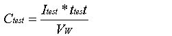
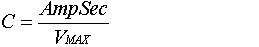
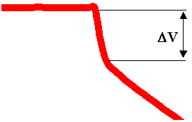
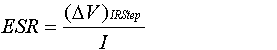

Role of subsystem in vehicle
The Energy Storage System (ESS) block typically represents the battery pack that stores energy on board the modeled vehicle, but in this case the block represents the ultracapacitor pack that replaces the traditional battery pack. This block accepts a power request and returns available/actual power output from the ultracapacitor pack, the ultracapacitor pack voltage and current, and the ultracapacitor State of Charge (SOC). By convention, positive power is discharge.
Description of modeling approach
ADVISOR’s UltraCap model is shown in circuit form in Figure 1. The UltraCap model uses power as an input and limits the ultracapacitor operation to the high and low voltage limits. Power delivered by the ultracapacitor is limited to the maximum that the equivalent circuit can deliver or the maximum that the motor controller can accept, given its minimum voltage requirement. However, since the lower voltage limit for an ultracapacitor is 0V, discharge limiting can also be accomplished by the powertrain control system based on the “cs_lo_soc” value. A simple single-node thermal model of the ultracapacitor is implemented with parallel flow air cooling. More detail can be found in the battery/ultracapacitor thermal model explanation.
The capacitor C is very large and is the means through which the ultracapacitor stores charge.
Figure 1: ADVISOR UltraCap Model
Variables used in subsystem
Implementation
The UltraCap model is implemented in Matlab/Simulink blocks. The model limits power to keep the ultracapacitor within operating limits, and calculates SOC and heat generation from the ultracapacitor. The block diagram implementation of the model is shown in Figure 2. A step-by-step explanation follows.
Figure 2: Block Diagram implementation of UltraCap model
Lastly, in using the UltraCap Model, a new functionality is added which allows the user to add parallel strings of ultracapacitors. This is accomplished by changing the variable ‘ess_parallel_mod_num’ to the integer value of strings that would be placed in parallel. This enables the construction of a higher capacity (Ah) ultracapacitor pack. The total number of ultracapacitors in use is then calculated by ess_module_num*ess_parallel_mod_num.
Parameter Generation
Parameter values were determined from analyzing laboratory data according to the U.S. DOE Electric Vehicle Capacitor Test Procedure Manual Revision 0. Parameters were generated for various temperatures and charge/discharge current values. The specific test used for determining capacitance and resistance is a constant current charge-discharge cycle that is repeated 3 consecutive times with the voltage held at Vmax and Vmin for 10 seconds in between charges/discharges. The current, voltage and Ah values from one charge-discharge cycle in a representative test can be seen in Figure 3.
Figure 3: Current, Voltage and Ah data used to determine ultacapacitor’s C and R values
Capacitor, C
The capacitor value in the DOE manual is determined by using Equation 2, Vw is the “working voltage” or the maximum voltage. However, this equation only takes into account the charge added to the ultracapacitor during the constant current portion of the charge. Therefore, the resulting capacitance that is calculated using this value has a Peukert type of relation that noticeably varies with current rate. For the UltraCap model the desired capacitance is the total capacitance so that the model can determine when the current output should be reduced due to reaching a voltage limit.
Equation 2
Instead of using Equation 2 in the UltraCap model, Equation 3 is used to determine the total charge into and out of the ultracapacitor (including the tapered current that tops off the charge to Vmax or levels off the discharge to 0V) by using the total Amp-Second integration (total Coulomb charge/discharge) over the test.
Equation 3
Resistance, R
Resistance values are determined during the same test at the beginning of a charge or discharge. Figure 4 shows the delta V that would be used in Equation 4 to determine the discharge resistance for the specified current used during this test. The difficulty with this procedure is determining at what point the “immediate” drop in voltage ends and the sloped voltage drop begins. However, validation tests have resulted in percent voltage error typically less than 5%.

Figure 4: Drop in voltage immediately after the beginning of discharge
Equation 4
Last Revised: 4/29/02: mdz